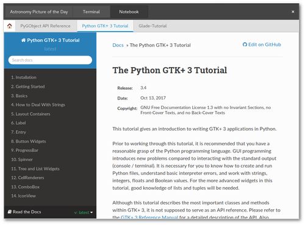
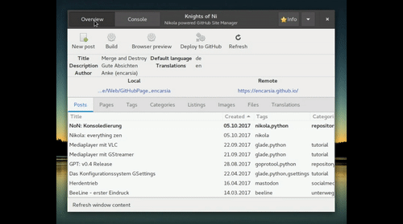
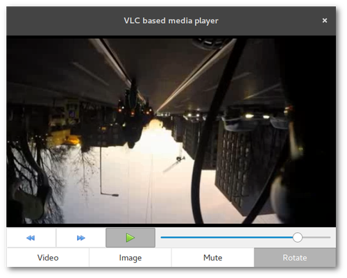

BeeLine - keep on riding
Contents
Further testing of the navigation compass BeeLine
See also my introductory BeeLine article.
It's alive!
BeeLine lives. There has been made some nice development progress. You could almost assume somebody from the team read my first article because nearly everything mentioned in the improvement section has been realized.
Another positive aspect is communication. The team reacts very fast on interactions on Twitter and via e-mail. It's quite exhilaranting to experience that there are real people working behind a product/brand...(yes, I'm looking at you, Google).
Improvements
My four points of criticism were:
- lack of practicality on waypoint handling
- accidentally finishing rides
- unclear button assignments
- wish for better route functionalities (import)
Waypoints
Manual scrolling
Scrolling through route waypoints is accomplished by pressing the N/S buttons. If you reach the last waypoint you can end your ride by confirming the "Arrived?" question.
There still is no information on waypoint progress on the device but it is shown in the app.
App: waypoint status
Automatic routing
If "Automatic Waypoint" is activated in the settings the next waypoint will be selected when passing the current one less than 100 meters. If you keep a distance larger than that Beeline will not change the selected waypoint even if another waypoint is closer.
When choosing automatic waypoint routing there always remains the option to manually skip waypoints.
I regard this to be a real killer feature which makes routing simple and precise while remaining discreet and in no way annoying.
Button assignment
As already said skipping through waypoints is done by pressing the upper or lower button. Pressing the lower button longer switches the integrated lamp on and off. The right and left buttons let you flip through
Compass <-> Speed <-> Time <-> Battery status (phone and BeeLine) <-> Compass
It did not happen anymore that I accidentally finished a ride, so this problem vanished.
Route import (whoop, whoop)
Not only can a route be created via BeeLine app but also be imported from a GPX file. In doing so the track will be simplified and (significant) changes of direction will be converted into waypoints. Two waypoints are always connected by a straight line (beeline).
Left: imported simplified route with waypoints. Right: original GPS track in Locus app
As you can see this works pretty nice. This route conversion provides waypoints for relevant route details (important changes of direction, crossroads, bridges) without determining a certain track layout.
Only few waypoints necessary to outline route
Make a wish
To avoid this article to be suspected of being some sponsored shit I reserved some space for my personal feature requests:
Ride routes in opposite direction
This would save some work for creating routes in reverse order.
Waypoint progress
I'd like to have that waypoint progress status shown on the device like it is displayed in the app ("Waypoint 6/20"). Yes, I know that this is unrelated to distances. That information does not have to be permanently present, I can imagine it to be integrated as a page on the right/left button page scroll function.
Pause ride
A funtion to pause/continue routes instead of finishing them would be helpful (for example to proceed on long tours or when spontaneously jumping into a nearby supermarket).
Calibration
We all hate it: the horseshoe symbol on the Beeline - bar left, bar right, front wheel up and agein. This is easy with the racing bike but a torture with the pannier packed trucker.
I don't really have a constructive suggestion here. The calibration horseshoe often appears during a ride and disappears after a while (sometimes within seconds). I mostly ignore it now.
Me vs. me
- I often ride the same routes.
- Everybody likes statistics.
So why not show a route summary with some information (frequency, duration, distance, speed)?
Conclusion
BeeLine has developed great and I will use it more frequently now. By expanding route functionalities (create, import, save, automatic routing) the device has become a really interesting and useful tool rather than just being a gadget.
Of course BeeLine still depends on a smartphone connection providing location service and Bluetooth. It cannot replace a standalone navigation system. Therefore battery consumption of the phone has to be considered on long tours. Power banks exist.
Comment on
Stacks und Notebooks
Inhalte organisiert anzeigen
Gtk.Stack und Gtk.Notebook sind Layout-Container, die ihrerseits beliebige Widgets enthalten können.
Ein Notebook stellt ein mehrseitiges Layout mit klassischer Tab-Funktionalität zur Verfügung. Stacks bieten die gleiche Grundfunktionalität, nämlich mehrere Container innerhalb eines Widgets zu enthalten, zwischen denen man hin- und herschalten kann.
Der Hauptunterschied besteht darin, dass das Bedienelement des Stacks als separates Widget verwendet werden muss (Gtk.StackSwitcher). Verschiedene StackSwitcher können dabei auf den selben Stack zugreifen. Weiterhin lassen sich StackSwitcher in Headerbars platzieren, außerdem werden animierte Überblenden zwischen den Stack-Seiten unterstützt.
Stacks passen sich subjektiv besser in die GNOME-Umgebung ein, bieten aber nicht ganz so große Funktionalität wie Notebooks.
Das Beispiel enhält ein Fenster mit Stack, in dessen dritter Seite ein Notebook enthalten ist, das verschiedene Webseiten anzeigt.
{kind=link}
Glade
Stack
Ein Stack, zu finden in der Sidebar unter "Container", und dessen Unterseiten lassen sich einfach in Glade erstellen und bearbeiten. Als Unterwidgets kommen im Beispiel Gtk.Image, Vte.Terminal und Gtk.Notebook zum Einsatz.
Das StackSwitcher-Widget befindet sich unter "Steuerung und Anzeige" und wird der Headerbar hinzugefügt. Es kann aber auch in reguläre Container-Widgets wie einer Box platziert und die Unterseiten horizontal oder vertikal angezeigt werden. Unter "Allgemein > Stapel" wird der Stack ausgewählt, auf den sich das Widget beziehen soll. Die anzuzeigende Seitenbezeichnung wird im jeweiligen Stack-Unterwidget unter "Packen > Titel" festgelegt.
Notebook
Das Notebook findet sich ebenfalls unter "Container". Die Steuerungseinheit des Tabs ist ein bei Erstellung einer Seite generiertes Label-Child-Widget. Als Container-Widgets der Unterseiten werden hier Gtk.ScrolledWindows verwendet. Diese benötigt man auch z.B. für die Anzeige von (längeren) Tabellen (siehe auch Artikel zu List-/TreeStores Nr. 1 und Nr. 2).
Die Tab-Leiste des Notebooks bietet die Möglichkeit, sowohl am Anfang als auch am Ende ein Container-Widget bereitzustellen (unter "Allgemein > Start-Aktion/End-Aktion"), in dem zum Beispiel feste Buttons untergebracht werden können. Im Beispiel wird am Anfang ein "Home"-Button eingerichtet.
Python
Für das Umherschalten zwischen Stack-Unterseiten und Notebook-Tabs werden keine Signale benötigt. Im Beispiel werden nur zwei Signale benötigt, einmal für das Abfangen des "exit"-Kommandos innerhalb des Terminals und für den Button in der Notebook-Tableiste.
WebKit2
Die Darstellung von Webseiten wird im Beispiel von WebKit2 erledigt. Das zentrale Modul dabei ist WebKit2.WebView. Ein neues WebView-Objekt selbst ist bereits ein scrollbares Gtk-Widget in einem Gtk.Viewport, muss also laut API-Referenz nicht mehr in ein Gtk.ScrolledWindow platziert werden. Dies funktionierte im Test zwar für Gtk.Stack, nicht aber für Gtk.Notebook, weshalb dort trotzdem als "Unterlage" ein ScrolledWindow-Widget verwendet wird.
Das WebView-Widget wird nach folgendem Muster erstellt:
#create new WebView widget webview = WebKit2.WebView() #send URL to widget webview.load_uri("http://google.com") #add webview to notebook notebook.add(webview) #add webview to stack stack.add_titled(webview, name, "StackSwitcher title") webview.show()
NoN: Konsoledierung
Knights of Ni - jetzt wird's schick
Einmal eingerichtet, benötigt man für das Befeuern einer Nikola-angetriebenen Seite nur einen Dateimanager, einen Editor, ein Terminal und normalerweise zwei Kommandos.
Und weil ich es gern bequem habe, habe ich mir etwas Unterstützung dafür gebastelt.
Was bisher geschah
Die per Button aufgerufenen Nikola-Kommandos wurden bisher folgendermaßen verarbeitet:
- nikola build lief im Hintergrund als subprocess.run(cmd)
- nikola github_deploy wurde im separaten Terminalfenster ausgeführt; dieses wurde nach der erfolgreichen Ausführung wieder geschlossen
Und das soll jetzt alles vorbei sein?
- "Neu ist immer besser."
- -- Barney Stinson
Die Oberfläche ist nun per Gtk.Stack zweigeteilt. Per Gtk.StackSwitcher in der Headerbar lässt sich zwischen der normalen Oberfläche und einem Terminal hin- und herwechseln.
Dies hat mehrere Eigenschaften und Vorteile:

- Das Teminal öffnet sich im aktuellen Verzeichnis der Nikola-Instanz.
- Das Terminal kann beliebig verwendet werden.
- Beim exit wird es nur resettet.
- build und github_deploy werden in diesem Terminal ausgeführt, wenn sie über die Oberfläche (Buttons) gestartet werden.
- Beim Ausführen über die Buttons wechselt der Focus auf das Terminal und nach Beenden des Tasks wieder zurück zur Oberfläche. Mit super Überblende (aktivierte Animationen erforderlich)!
- Optisch aufgeräumter, da kein separates Fenster mehr benötigt wird.
Nikola: everything zen
Aktualisiertes zen-Thema für Nikola
Diese Seite wird mit dem statischen Webseitengenerator Nikola betrieben. Dabei wird das zen-Thema verwendet.
Die immer noch aktuelle Version des Themes verwendet Font Awesome 3.2.1, welches nicht mehr unterstützt wird. Die Icons lassen sich natürlich weiterhin verwenden, aber man muss auf aktualisierte und neue Icons verzichten.
Da ich dies sowie ein paar Kleinigkeiten am Theme verändert, aber an LESS vorbei einfach nur im CSS herumgepfuscht habe, werde ich dies nicht committen, sondern nur hier als gepacktes Archiv abladen (für den Fall, dass jemand Interesse daran hat).
Installation
Das Theme wird wie gehabt im entsprechenden Verzeichnis entpackt (nikola_instanz/themes/) und anschließend in der conf.py zu
THEME = "zen_fa4"
geändert. Die Änderungen werden natürlich erst nach dem nächsten
nikola build
wirksam.
Less LESS with CSS
Die zen-Themes sind mit dem LESS-Framework erstellt. Der Vorteil daran ist, dass die LESS-Dateien in CSS-Dateien kompiliert werden, die dann ebenso editiert werden können.
Die CSS-Dateien befinden sich in .../themes/zen_fa4/assets/css/, im Fall des zen-Themes benötigt man nur die main.css. Die aktualisierten Font Awesome-Fonts befinden sich (logischerweise) in .../themes/zen_fa4/assets/fonts/.
Möchte man bei LESS bleiben, steht dafür aber auch ein Nikola-Plugin bereit.
Links
Download
Media player with VLC
Contents
Creating a media player with LibVLC
VLC is not just a multimedia player but also a framework with Python bindings available. In this example app a simple media player will be set up via LibVLC (see also the GStreamer mediaplayer article).
{kind=link}
LibVLC
The installation of the VLC Python bindings are mandatory. The package is coomonly found under the name python-vlc.
Glade
- display area of the media file: Gtk.DrawingArea widget
- control elements: skip for-/backward (Gtk.Button), pause/resume playback (Gtk.Togglebutton)
- select media: buttons to show video or image file
- manipulate playback: buttons to mute and rotate video
Python
Set up player
The VLC player is initiated when the corresponding widget (Gtk.DrawingArea) is drawn. The realize is required for that task. This signal in general is available for the widget class.
vlcOptions = "--no-xlib" win_id = widget.get_window().get_xid() setup_player(vlcOptions) vlcInstance = vlc.Instance(options) player = vlcInstance.media_player_new() player.set_xwindow(win_id)
Given options can be regular VLC commandline options. In the example app a click on the "rotate" button turns the video 180 degrees. Therefore the player must be initiated again with the option --video-filter=transform{type=180} given.
Media playback
Just like the GStreamer player VLC is capable of showing various video, audio and image formats.
player.set_mrl(file_url) #start playback player.play() #pause/resume playback player.pause()
Position scale
The implementation of the progress bar using a slide control is pretty simple.
#retrieve position player.get_position() #define positition player.set_position(val)
Possible values are float numbers between 0 and 1. These functions are quite resource demanding resulting into stuttering playback. In this example the get_position is avoided by retrieving the slider position instead of the video.
Possibilities and limitations
Working with LibVLC Python bindings is easy and intuitive in contrast to GStreamer. In addition the "headerbar problem" is non-existent.
On the other hand it is not quite minimalistic to resort to a huge and indepentant project. You will have to install VLC and Python bindings instead of just importing the GStreamer module from the GObject Introspection repository.
The overall consumption of resources is bigger.